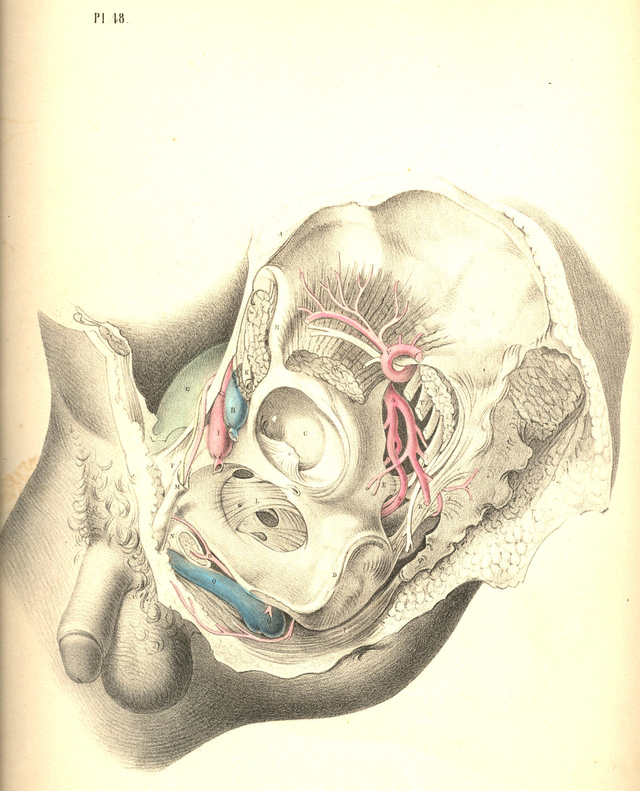
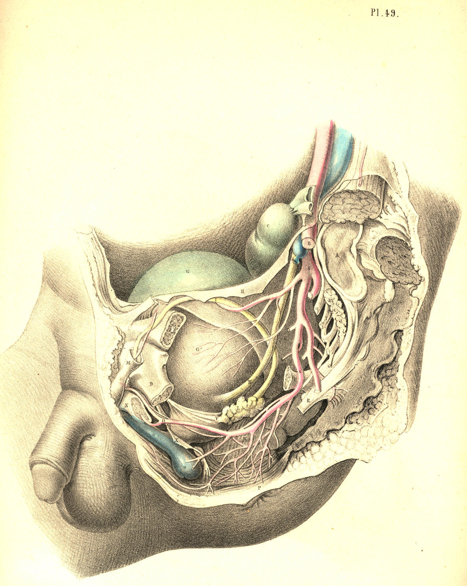

SURGICAL ANATOMY by JOSEPH MACLISE
COMMENTARY ON PLATES 48 & 49.
THE RELATIVE ANATOMY OF THE MALE PELVIC ORGANS.
As the abdomen and pelvis form one general cavity, the organs contained
in both regions are thereby intimately related. The viscera of the
abdomen completely fill this region, and transmit to the pelvic organs
all the impressions made upon them by the diaphragm and abdominal walls.
The expansion of the lungs, the descent of the diaphragm, and the
contraction of the abdominal muscles, cause the abdominal viscera to
descend and compress the pelvic organs; and at the same time the muscles
occupying the pelvic outlet, becoming relaxed or contracted, allow the
perinaeum to be protruded or sustained voluntarily according to the
requirements. Thus it is that the force originated in the muscular
parietes of the thorax and abdomen is, while opposed by the counterforce
of the perinaeal muscles, brought so to bear upon the pelvic organs as
to become the principal means whereby the contents of these are
evacuated. The abdominal muscles are, during this act, the antagonists
of the diaphragm, while the muscles which guard the pelvic outlet become
at the time the antagonists of both. As the pelvic organs appear
therefore to be little more than passive recipients of their contents,
the voluntary processes of
defecation and micturition may with more
correctness be said to be performed rather for them than by them. The
relations which they bear to the abdomen and its viscera, and their
dependence upon these relations for the due performance of the processes
in which they serve, are sufficiently explained by pathological facts.
The same system of muscles comprising those of the thorax, abdomen and
perinaeum, performs consentaneously the acts of respiration, vomiting,
defecation and micturition. When the spinal cord suffers injury above
the origin of the phrenic nerve, immediate death supervenes, owing to a
cessation of the respiratory act. Considering, however, the effect of
such an injury upon the pelvic organs alone, these may be regarded as
being absolutely excluded from the pale of voluntary influence in
consequence of the paralysis of the diaphragm, the abdominal and
perinaeal muscles. The expulsory power over the bladder and rectum being
due to the opposing actions of these muscles above and below, if the
cord be injured in the neck below the origin of the phrenic nerve, the
inferior muscles becoming paralysed, the antagonism of muscular forces
is thereby interrupted, and the pelvic organs are, under such
circumstances, equally withdrawn from the sphere of volition. The
antagonism of the abdominal muscles to the diaphragm being necessary, in
order that the pelvic viscera may be acted upon, if the cord be injured
in the lower dorsal region, so as to paralyse the abdominal walls and
the perinaeal muscles, the downward pressure of the diaphragm alone
could not evacuate the pelvic organs voluntarily, for the abdominal
muscles are now incapable of deflecting the line of force backwards and
downwards through the pelvic axis; and the perinaeal muscles being also
unable to act in agreement, the contents of the viscera pass
involuntarily. Again, as the muscular apparatus which occupies the
pelvic outlet acts antagonistic to the abdomen and thorax, when by an
injury to the cord in the sacral spine the perinaeal apparatus alone
becomes paralysed, its relaxation allows the thoracic and abdominal
force to evacuate the pelvic organs involuntarily. It would appear,
therefore, that the term "paralysis" of the bladder or rectum, when
following spinal injuries, &c. &c. means, or should mean, only a
paralytic state of the abdomino-pelvic muscular apparatus, entirely or
in part. For, in fact, neither the bladder nor rectum ever acts
voluntarily per se any more
than the stomach does, and therefore the
name "detrusor" urinae, as applied to the muscular coat investing the
bladder, is as much a misnomer (if it be meant that the act of voiding
the organ at will be dependent upon it) as would be the name "detrusor"
applied to the muscular coat of the stomach, under the meaning that this
were the agent in the spasmodic effort of vomiting.
The urinary bladder, G, Plate 49, (in the adult body,) occupies the true
pelvic region when the organ is collapsed, or only partly distended. It
is situated behind the pubic symphysis and in front of the rectum,
C,--the latter lies between it and the sacrum, A. In early infancy, when
the pelvis is comparatively small, the bladder is situated in the
hypogastric region, with its summit pointing towards the umbilicus; as
the bladder varies in shape, according to whether it be empty or full,
its relations to neighbouring parts, especially to those in connexion
with its summit, vary also considerably. When empty, the back and upper
surface of the bladder collapse against its forepart, and in this state
the organ lies flattened against the pubic symphysis. Whether the
bladder be distended or not, the small intestines lie in contact with
its upper surface, and compress it in the manner of a soft elastic
cushion. When distended largely, its summit is raised above the pubic
symphysis, the small intestines having yielded place to it, and in this
state it can be felt by the hand laid upon the hypogastrium.
The shape of the bladder varies in different individuals. In some it is
rounded, in others pyriform, in others peaked towards its summit. Its
capacity varies also considerably at different ages and in different
sexes. When distended, its long axis will be found to coincide with a
line passing from a point midway between the navel and pubes to the
point of the coccyx, the obliquity of this direction being greatest when
the body is in the erect posture, for the intestines now gravitate upon
it. When the body is recumbent, the bladder recedes somewhat from the
pubes, and as the intestines do not now press upon it from above, it
allows of being distended to a much greater degree without causing
uneasiness, and a desire to void its contents.
The manner in which the bladder is connected to neighbouring parts is
such as to admit of its full distension. Its summit, back, and upper
sides are free and covered by the elastic peritonaeum, whilst its front,
lower sides, and base are adherent to adjacent parts, and divested of
the serous membrane. On tracing the peritonaeum from the front wall of
the abdomen to its point of reflexion over the summit of the bladder, we
find the membrane to be in this part so loosely adherent, that the
bladder when much distended, raises the peritonaeum above the level of
the upper margin of the pubic symphysis. In this state the organ may be
punctured immediately above the pubic symphysis without endangering the
serous sac. When the bladder is collapsed, the peritonaeum follows its
summit below the level of the pubes, and in this position of the organ
such an operation would be inadmissible, if indeed the necessity for it
can now be conceived.
By removing the os innominatum, A D, Plate 48, together with the
internal obturator, and levator ani muscles, which arise from its inner
side, we obtain a lateral view, Plate 49, of the pelvic viscera, and of
the vessels &c. connected with them. Those parts of the bladder, G,
and
the rectum, C, which are invested by the peritonaeum, are also now fully
displayed. On tracing this membrane from before backwards, over the
summit of the bladder, G, we find it descending deeply upon the
posterior surface of the organ, before it becomes reflected so as to
ascend over the forepart of the rectum. This duplicature of the serous
membrane, H H, is named the recto-vesical pouch, and it is required to
ascertain with all the exactness possible the level to which it
descends, so as to avoid it in the operation of puncturing the bladder
through the rectum. The serous pouch descends lower in some bodies than
in others; but in all there exists a space, of greater or less
dimensions, between it and the prostate, V, whereat the base of the
bladder is in direct apposition with the rectum, W, the serous membrane
not intervening.
When the peritonaeum is traced from one iliac fossa to the other, we
find it sinking deeply into the hollow of the pelvis behind the bladder,
so as to form the sides of the recto-vesical pouch; but when traced over
the summit of the bladder, this organ is seen to have the membrane
reflected upon it, almost immediately below the pelvic brim. At the
situations where the peritonaeum becomes reflected in front, laterally,
and behind, upon the sides of the bladder, the membrane is thrown into
folds, which are named "false ligaments." The pelvic fascia, in being
reflected to the bladder from the front and sides of the pelvis, at a
lower level than that of the peritonaeum, forms the "true ligaments." In
addition to these ligaments, which serve to keep the base and front of
the bladder fixed in the pelvis, other structures, such as the ureters,
K, the vasa deferentia, I, the hypogastric cords, the urachus, and the
bloodvessels, embrace the organ in various directions, and act as
bridles, to limit its expansion more or less in all directions, but
least so towards its summit, which is always comparatively free.
The neck and outlet of the bladder, V, are situated at the anterior part
of its base, and point towards the subpubic space. The prostate gland,
V, surrounds its neck, and occupies a position behind and below the
pubic arch, D, and in front of the rectum, W. The gland, V, being of a
rounded form and dense structure, can be felt in this situation by the
finger, passed upwards through the bowel. The prostate is suspended from
the back of the pubic arch by the anterior true ligament of the bladder,
and at its forepart, where the membranous portion of the urethra
commences, this passes through the deep perinaeal fascia, X. The
anterior fibres of the levator ani muscle embrace the prostate on both
its sides. Behind the base of the prostate, the ureter, K, is seen to
enter the coats of the bladder obliquely, whilst the vas deferens, I,
joined by the vesicula seminalis, L, penetrates the substance of the
prostate, V, at its lower and back part, which lies in apposition with
the rectum.
The rectum, W C, at its middle and upper parts, occupies the hollow of
the sacrum, A Q, and is behind the bladder. The lower third of the
rectum, W, not being covered by the peritonaeum, is that part on which
the various surgical operations are performed. At its upper
three-fifths, the rectum describes a curve corresponding to that of the
sacrum; and if the bladder be full, its convex back part presses the
bowel against the bone, causing its curve to be greater than if the
bladder were empty and collapsed. This fact requires to be borne in
mind, for, in order to introduce a bougie, or to allow a large injection
to pass with freedom into the bowel, the bladder should be first
evacuated. The coccygeal bones, Q, continuing in the curve of the
sacrum, bear the rectum, W, forwards against the base of the bladder,
and give to this part a degree of obliquity upwards and backwards, in
respect to the perinaeum and anus. From the point where the prostate, V,
lies in contact with the rectum, W, this latter curves downwards, and
slightly backwards, to the anus, P. The prostate is situated at a
distance of about an inch and a half or two inches from the anus--the
distance varying according to whether the bladder and bowel be distended
or not. [Footnote]
[Footnote: The distance between any two given parts is found to vary in
different cases. "In subjects of an advanced age," Mr. Stanley remarks,
"a deep perinaeum, as it is termed, is frequently met with. This may be
occasioned either by an unusual quantity of fat in the perinaeum, or by
an enlarged prostate, or by the dilatation of that part of the rectum
which is contiguous to the prostate and bladder. Under either of these
circumstances, the prostate and bladder become situated higher in the
pelvis than naturally, and consequently at a greater distance from the
perinaeum."--On the Lateral Operation
of Lithotomy.]
The arteries of the bladder are derived from the branches of the
internal iliac, S. The rectum receives its arteries from the inferior
mesenteric and pudic. The veins which course upwards from the rectum are
large and numerous, and devoid of valves. When these veins become
varicose, owing to a stagnation of their circulation, produced from
whatever cause, the bowel is liable to be affected with haemorrhoids or
to assume a haemorrhagic tendency.
The pudic artery, S s, is a
branch of the internal iliac. It passes from
the pelvis by the great sciatic foramen, below the pyriformis muscle,
and in company with the sciatic artery. The pudic artery and vein wind
around the spine, E, of the ischium, where they are joined by the pudic
nerve, derived from, T, the sacral plexus. The artery, in company with
the nerve and vein, re-enters the pelvis by the small sciatic foramen,
and gets under cover of a dense fibrous membrane (obturator fascia),
between which and the obturator muscle, it courses obliquely downwards
and forwards to the forepart of the perinaeum. At the place where the
vessel re-enters the pelvis, it lies removed at an interval of an inch
and a half from the perinaeum, but becomes more superficial as it
approaches the subpubic space, N. The levator ani muscle separates the
pudic vessels and nerves from the sides of the rectum and bladder. The
principal branches given off from the pudic artery of either side, are
(1st), the inferior hemorrhoidal, to supply the lower end of the rectum;
(2nd), the transverse and superficial perinaeal; (3rd), the artery of
the bulb; (4th), that which enters the corpus cavernosum of the penis,
N; and (5th), the dorsal artery of the penis. [Footnote] The branches
given off from the pudic nerve correspond in number and place to those
of the artery. Having now considered the relations of the pelvic organs
in a lateral view, we are better prepared to understand these relations
when seen at their perinaeal aspect.
[Footnote: The pudic artery, or some one of its branches, occasionally
undergoes marked deviations from the ordinary course. In Mr. Quain's
work, ("Anatomy of the Arteries,") a case is represented in which the
artery of the bulb arose from the pudic as far back as the tuber ischii,
and crossed the line of incision made in the lateral operation of
lithotomy. In another figure is seen a vessel ("accessory pudic"),
which, passing between the base of the bladder and the levator ani
muscle, crosses in contact with the left lobe of the prostate.]
DESCRIPTION OF PLATES 48 & 49.
PLATE 48.
A. The anterior superior iliac spine.
B. The anterior inferior iliac spine.
C. The acetabulum; c, the
ligamentum teres.
D. The tuber ischii.
E. The spine of the ischium.
F. The pubic horizontal ramus.
G. The summit of the bladder covered by the peritonaeum.
H. The femoral artery.
I. The femoral vein.
K. The anterior crural nerve.
L. The thyroid ligament.
M. The spermatic cord.
N. The corpus cavernosum penis; n,
its artery.
O. The urethra; o, the bulbus
urethrae.
P. The sphincter ani muscle.
Q. The coccyx.
R. The sacro-sciatic ligament.
S. The pudic artery and nerve.
T. The sacral nerves.
U. The pyriformis muscle, cut.
V. The gluteal artery.
W. The small gluteus muscle.

Plate 48
PLATE 49.
A. The part of the sacrum which joins the ilium.
B. The external iliac artery, cut across.
C. The upper part of the rectum.
D. The ascending pubic ramus.
E. The spine of the ischium, cut.
F. The horizontal pubic ramus, cut.
G. The summit of the bladder covered by the peritonaeum; G *, its side,
not covered by the membrane.
H H. The recto-vesical peritonaeal pouch,
I. The vas deferens.
K. The ureter.
L. The vesicula seminalis.
M, N, O, P, Q, R, S, T, U, refer to the same parts as in Plate 48.
V. The prostate.
W. The lower part of the rectum.
X. The deep perinaeal fascia.

Plate 49
COMMENTARY ON PLATES 50
& 51